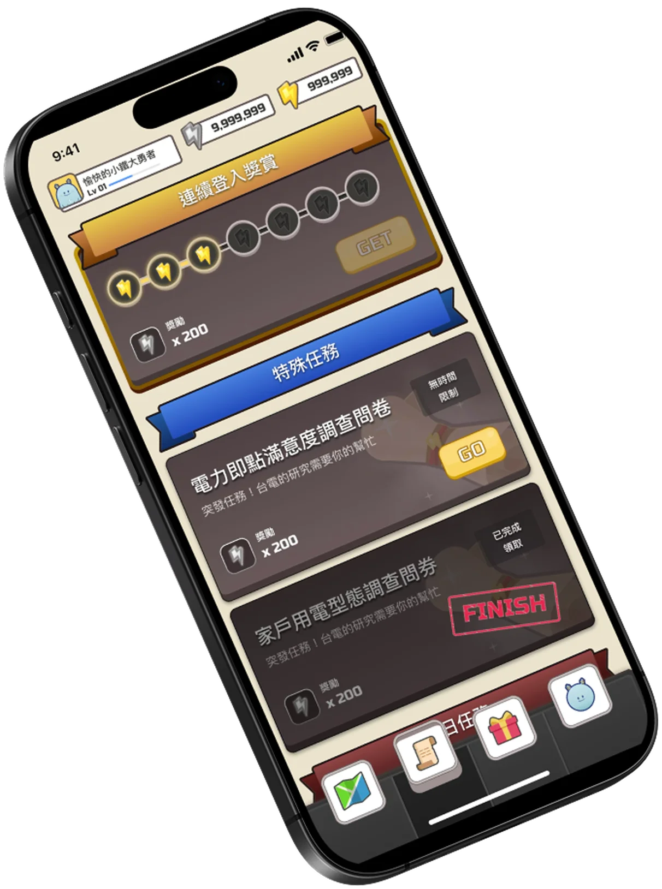
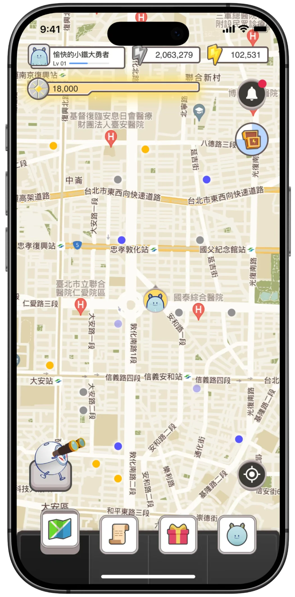
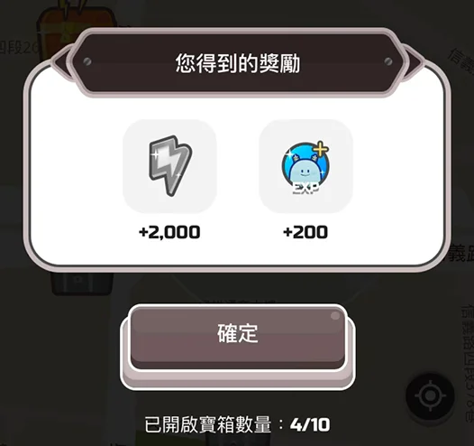
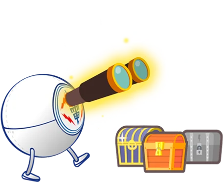
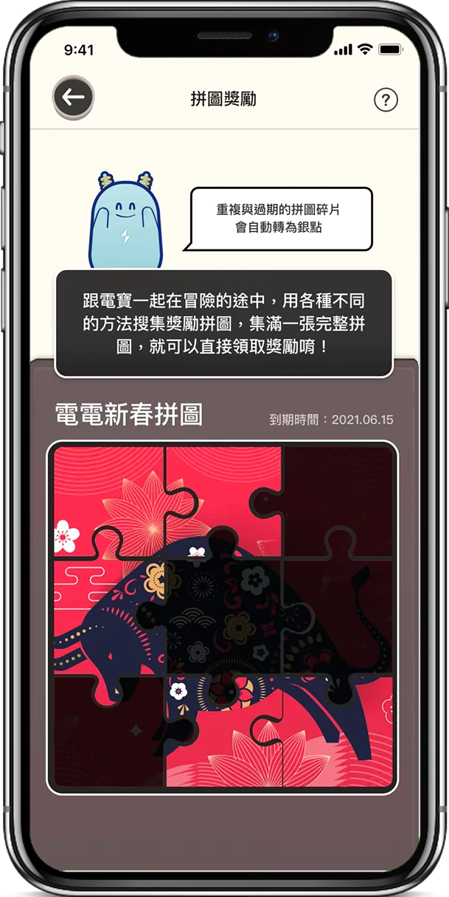
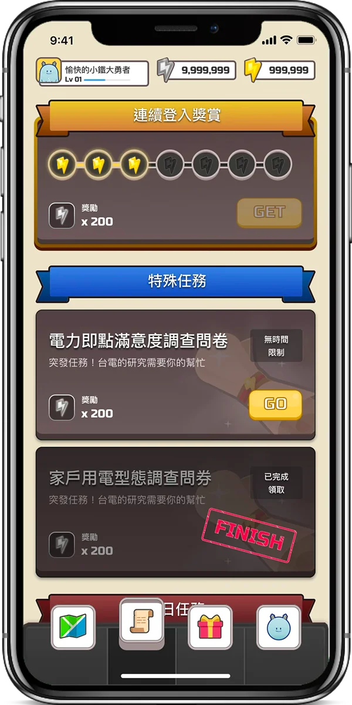
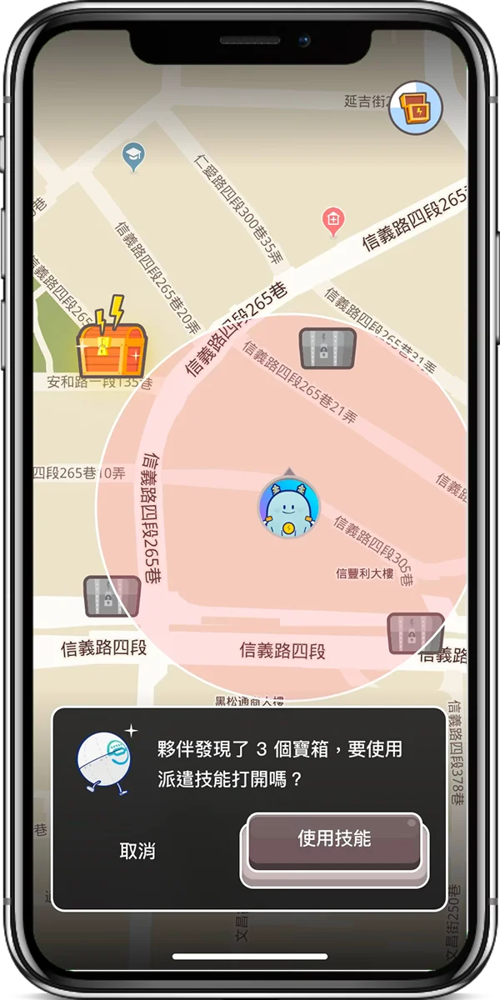
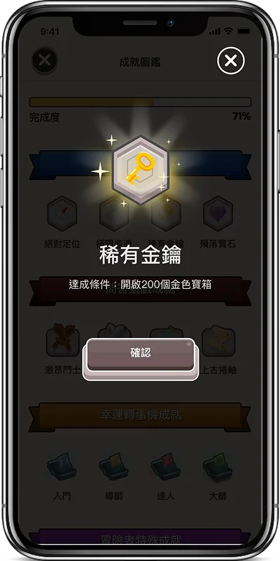

擺脫公部門既有形象
電力即點 App
Intro
節能省電多散步，電力即點集點數
電力即點是一款類 Ingress 的地圖式尋寶遊戲，由台灣電力公司委託，期望能進行全面的改版，以增加用戶數以及使用量。
在此案件中，我規劃整個遊戲背景、故事架構與機制，用更吸引用戶的方式傳達節電的理念。
在我們初次的改版中，以台電新的吉祥物們陪伴使用者，透過分布在地圖上的寶藏點位，培養民眾出門散步的習慣，以及每日問答任務，將節電相關知識潛移默化進入用戶的心中。使用者完成任務後皆可獲得遊戲代幣，並兌換不同類別的獎項或折抵電費。
V1.0 亮點
新版吉祥物大量曝光
建立背景故事，讓每個角色有其負責的功能項目與用戶對話，並加入升級機制，與用戶一同成長。
介面全新改版

大範圍參考遊戲介面，建立屬於電力即點世界的全新視覺風格，改變公部門數位產品的形象。
管理後台改版

針對問答題庫，用戶數據與寶箱點位等功能建立完整管理後台，提升承辦人員管理效率。
V1.0 版本上線後
總用戶達改版前 5 倍以上成長
日活躍用戶數達 9 倍以上成長
But...
Problem & Research
1. 採購流程繁瑣，兌換品項不足
公部門預算編列以季為單位，且採購流程繁瑣，民眾早已積蓄大量點數。導致可兌換品項上架時被瞬間兌換完畢，使得民眾徒有點數卻無法使用。
2. 寶箱點位過少且不均
為避免爭議，寶箱多為公家單位 GPS 點位，導致數量較少，且分配不均。超過半數用戶無法順利達成每日開啟數量，無法取得應有的經驗值，導致無法體驗後續成長內容。
設計重點

拿到就有，不用搶
拼圖系統：豐富寶箱品項隨機性
在普通寶箱內，新增了可以直接兌換品項的「拼圖碎片」，在一個季度內若能搜集滿一片完整的拼圖，即可保證兌換品項。
藉此，即便在開啟普通寶箱時，也能具備一定量的隨機性，並且讓參與度較高的使用者，不需要搶購，也能得到應有的獎勵。
不開寶箱，也能體驗升級的快樂
新增連續登入獎勵、計步任務、高級派遣技能
除既有問答、地圖尋寶外，採用了以角色經驗值為主要獎勵的「連續登入獎勵」以及「計步任務」機制，讓用戶在日常生活中也能見證到角色的成長，將原先以「兌換點數」的務實需求，轉至對於角色成長的內在驅動力。
而當角色成長到更高階型態時，即可使用「高級派遣技能」一次開啟半徑固定範圍內的所有寶箱，以獎勵認真參與遊戲的忠誠用戶。



讓遊戲行為成為獎勵的一部分
新增成就任務與活動型後台
因應台電時常出現的行銷活動需求，我們將期望用戶執行的動作列為成就解鎖列表引導用戶產生特定行為，讓單調、負面的事件也能轉化為新的樂趣。
同時讓承辦人員能於管理後台設定期間或地區限定的獎勵（例如活動現場的限定寶箱等），達到線上線下互相提升參與成效的效果。
Result
V1 至 V2 改版後成效
641+%
V2.0 上線後一年
總用戶成長％
474+%
V2.0 上線後一年
每日活躍用戶成長％
6,000+%
V2.0 上線後一年
高等級用戶成長％
1,700k+
V2.0 上線後一年
計步任務完成次數
好，還要再更好
雖在 v2 有亮眼的成長
但仍有兩個待解決的議題
1. 點數的使用應有更多元的管道（在不影響採購的前提下）
2. 缺少玩家間的互動性
因此後續有提出如下功能建議，並通過客戶提案：
- · 紙娃娃系統：建立角色房間，以點數購買背景、裝飾或造型，增加點數使用範圍
- · 排行與社交系統：用戶可看到該期別取得點數的排行榜，以及該玩家的角色造型
唯於後續開發過程中已離職，無法取得後續用戶反饋及資料，故僅簡短說明。
學習與反思
公部門有自己的負擔，但也有許多轉機
除了作為設計師與玩家，更要站在客戶端立場
設計公部門產品，比起一般企業更容易遇到「資源」跟「規則變動」間的困難，同時對於「客訴」問題更加敏感。
因此在每次改版時，除了顧及是否有過度發散，導致需要客戶額外投入的資源外，也需要顧及既有已公布的遊戲規則，並在此之上試圖做出改變。
過程中也不時要在顧及「用戶遊戲性」以及「客戶 KPI」的角色中不斷轉換。除了前端遊戲內容外，也要不斷豐富後台的管理功能，才能真正滿足客戶的需求。
很開心每次改版提案都能得到客戶的支持，也從數據上看出得到用戶一定程度的喜愛。這份案子是我首次主責，且連續維護改版四年的專案，陪著他一步一步成長，是我目前最為完整的設計經歷之一。雖然目前已於 Appstore 下架，但仍然是我十分滿意的案件。
涉及公司營運相關數字持保密原則，僅以比例呈現